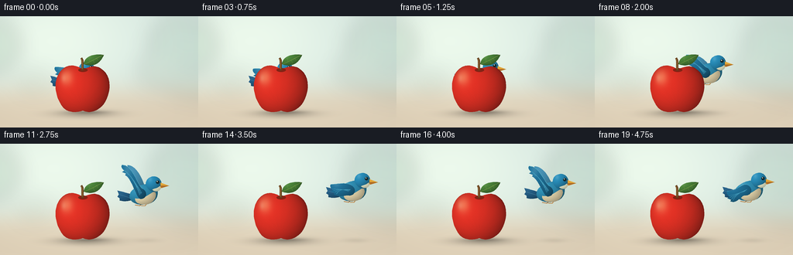
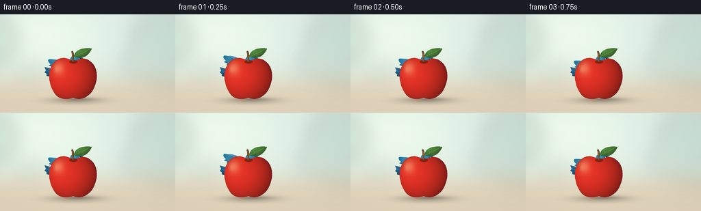
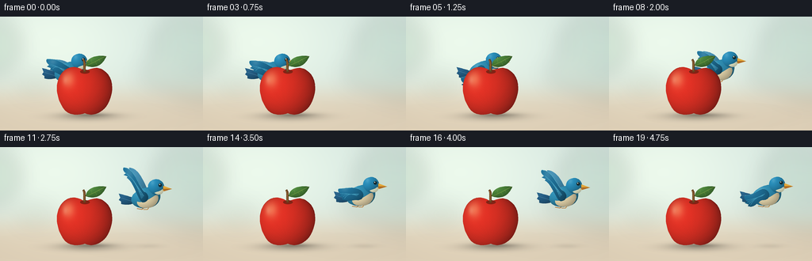
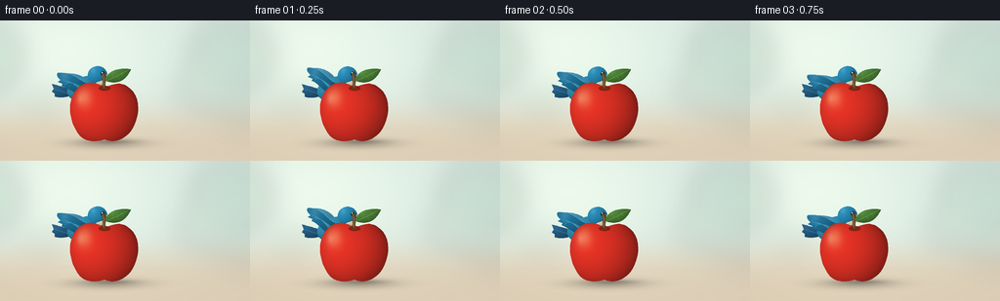

CODING AGENTS AS PIXEL WORLD MODELS
traex/GPT-6.1-Sol · dynamic_spatial_relationship_0036
点击播放 · 原生 RGB 像素
逐轮保存的候选
回放视频、检查图与代码变化。
每份候选均可单独播放。实际图片检查记录在下方工具轨迹中。
候选 01播放与检查图
点击播放 · 原生 RGB 像素


展开代码变化
--- 上一保存版本
+++ 本次保存版本
@@ -0,0 +1,158 @@
+from pathlib import Path
+import math
+import numpy as np
+from PIL import Image, ImageDraw, ImageFilter
+import artifact_io
+
+ROOT=Path(__file__).resolve().parent
+W,H,S=256,144,4
+WW,HH=W*S,H*S
+Y,X=np.mgrid[0:HH,0:WW].astype(np.float32); X/=S; Y/=S
+
+def curve(commands):
+ points=[]; cur=None; start=None
+ for c in commands:
+ if c[0]=='M': cur=np.array(c[1:],float); start=cur.copy(); points.append(tuple(cur))
+ elif c[0]=='L': cur=np.array(c[1:],float); points.append(tuple(cur))
+ elif c[0]=='C':
+ a=cur; b=np.array(c[1:3]); d=np.array(c[3:5]); e=np.array(c[5:7]);
+ for t in np.linspace(0,1,25)[1:]: points.append(tuple((1-t)**3*a+3*(1-t)**2*t*b+3*(1-t)*t*t*d+t**3*e))
+ cur=e
+ elif c[0]=='Z': points.append(tuple(start))
+ return points
+
+def mask(points):
+ m=Image.new('L',(WW,HH)); ImageDraw.Draw(m).polygon([(round(x*S),round(y*S)) for x,y in points],fill=255); return m
+
+def poly(im,pts,col): ImageDraw.Draw(im).polygon([(int(x*S),int(y*S)) for x,y in pts],fill=col)
+def pathline(im,pts,col,width=1): ImageDraw.Draw(im).line([(int(x*S),int(y*S)) for x,y in pts],fill=col,width=max(1,int(width*S)),joint='curve')
+def ell(im,box,fill): ImageDraw.Draw(im).ellipse(tuple(int(a*S) for a in box),fill=fill)
+def shaded(im, pts, color, center, radii, highlight=.3):
+ m=mask(pts)
+ nx=(X-center[0])/radii[0]; ny=(Y-center[1])/radii[1]
+ z=np.sqrt(np.maximum(0,1-nx*nx-ny*ny))
+ light=np.clip(.64+.29*z-.2*nx-.19*ny,.34,1.18)
+ arr=np.empty((HH,WW,3),np.float32)
+ for k,c in enumerate(color): arr[:,:,k]=c*light
+ spec=np.exp(-((nx+.39)**2/.045+(ny+.43)**2/.085))*highlight
+ arr=arr*(1-spec[:,:,None])+np.array([255,251,238])*spec[:,:,None]
+ im.paste(Image.fromarray(np.clip(arr,0,255).astype(np.uint8)),(0,0),m)
+
+# A quiet sunlit garden backdrop: distant blurred foliage, warm stone foreground.
+def background():
+ sky=np.array([215,232,225],float); ground=np.array([223,209,185],float)
+ blend=1/(1+np.exp(-(Y-96)/9))
+ arr=sky[None,None,:]*(1-blend[:,:,None])+ground[None,None,:]*blend[:,:,None]
+ glow=np.exp(-((X-61)**2/14000+(Y-31)**2/5200))
+ arr+=glow[:,:,None]*np.array([22,18,12])[None,None,:]
+ arr-=((X-128)**2/(128**2)+(Y-65)**2/(144**2))[:,:,None]*3
+ base=Image.fromarray(np.uint8(np.clip(arr,0,255))).convert('RGB')
+ foliage=Image.new('RGBA',(WW,HH))
+ d=ImageDraw.Draw(foliage)
+ for x,y,rx,ry,co in [(-15,38,40,37,(121,165,131,45)),(231,39,38,38,(129,169,141,43)),(204,71,26,19,(135,162,127,32)),(44,85,22,13,(145,166,130,24)),(272,92,56,15,(133,163,130,31))]:
+ d.ellipse(((x-rx)*S,(y-ry)*S,(x+rx)*S,(y+ry)*S),fill=co)
+ foliage=foliage.filter(ImageFilter.GaussianBlur(12*S)); base=Image.alpha_composite(base.convert('RGBA'),foliage).convert('RGB')
+ shadow=np.exp(-((X-110)/38)**2-((Y-126)/5)**2)*.25
+ shadow+=np.exp(-((X-114)/24)**2-((Y-124)/2.2)**2)*.17
+ a=np.asarray(base).astype(float)*(1-shadow[:,:,None]); return Image.fromarray(np.uint8(a))
+
+APPLE=curve([('M',107,69),('C',99,63,88,61,80,69),('C',68,80,70,102,80,116),('C',86,125,98,125,107,122),('C',117,127,130,121,136,110),('C',144,95,143,77,132,69),('C',124,62,115,65,107,69),('Z',)])
+LEAF=curve([('M',108,62),('C',109,52,120,48,134,50),('C',130,59,123,67,108,62),('Z',)])
+
+def apple(im):
+ m=mask(APPLE)
+ nx=(X-106)/37; ny=(Y-94)/34
+ z=np.sqrt(np.maximum(0,1-nx**2-ny**2))
+ l=np.clip(.58+.36*z-.19*nx-.10*ny,.33,1.12)
+ rgb=np.stack([225*l+8,47*l+4,34*l+4],axis=-1)
+ # Broad painterly highlight and a little waxy reflection.
+ h=np.exp(-((X-86)**2/62+(Y-79)**2/100))*.43
+ rgb=rgb*(1-h[:,:,None])+np.array([255,197,138])*h[:,:,None]
+ h2=np.exp(-((X-82)**2/8+(Y-80)**2/27))*.16
+ rgb=rgb*(1-h2[:,:,None])+np.array([255,242,205])*h2[:,:,None]
+ grain=(np.sin(X*2.32+Y*1.83)*np.sin(Y*3.73-X*.62))*.8
+ rgb+=grain[:,:,None]
+ # faint vertical apple striations
+ streak=(np.sin(np.arctan2(X-106,118-Y)*19)+1)*.8
+ rgb[:,:,0]-=streak
+ im.paste(Image.fromarray(np.uint8(np.clip(rgb,0,255))),(0,0),m)
+ # Small dimple around the stalk.
+ ell(im,(101,67,113,72),(130,35,21))
+ pathline(im,curve([('M',107,70),('C',106,64,108,58,105,54)]),(101,66,32),3.1)
+ pathline(im,curve([('M',106.2,68),('C',106,62,107,59,105,55)]),(165,115,59),.85)
+ shaded(im,LEAF,(76,133,58),(120,56),(16,9),.09)
+ pathline(im,curve([('M',108,62),('C',117,59,125,54,133,50)]),(142,171,74),.6)
+ for a,b,c,d in [(116,59,115,54),(120,57,122,61),(125,54,126,57)]: pathline(im,[(a,b),(c,d)],(116,153,67),.35)
+
+
+def bird(im,cx,cy,phase,flight):
+ # Work in local coordinates; all appendages stay attached through the wing cycle.
+ def tr(pts): return [(cx+x,cy+y) for x,y in pts]
+ def sh(pts,col,ct,rad,hi=.1): shaded(im,tr(pts),col,(cx+ct[0],cy+ct[1]),rad,hi)
+ def lin(pts,col,w=1): pathline(im,tr(pts),col,w)
+ def el(box,col): ell(im,(cx+box[0],cy+box[1],cx+box[2],cy+box[3]),col)
+ # The far wing is a lighter, separate feathered silhouette.
+ flap=math.sin(phase)
+ wing_y=-9-25*flap
+ if not flight: wing_y=-14-3*flap
+ far=curve([('M',3,-5),('C',-1,-13,-8,wing_y-5,-22,wing_y-5),('C',-22,wing_y+1,-14,wing_y+7,-10,-1),('C',-5,6,0,3,3,-5),('Z',)])
+ sh(far,(68,141,176),(-9,wing_y/2),(18,30),.03)
+ # Fanned blue tail.
+ tail=curve([('M',-12,1),('C',-18,0,-26,-3,-35,-5),('L',-33,0),('L',-35,3),('L',-32,5),('L',-32,8),('C',-24,10,-18,8,-12,6),('Z',)])
+ sh(tail,(36,93,132),(-24,2),(16,11),.03)
+ lin([(-33,0),(-17,5)],(84,143,172),.55); lin([(-32,5),(-17,6)],(24,78,110),.55)
+ # Tiny orange legs, tucked backwards in flight.
+ if flight:
+ lin([(-1,11),(-6,15),(-12,14)],(173,111,48),1)
+ lin([(5,10),(1,15),(-4,15)],(185,124,57),.9)
+ else:
+ lin([(-4,9),(-4,16),(-9,18)],(165,103,42),1)
+ lin([(4,10),(4,17),(9,18)],(180,116,50),1)
+ body=curve([('M',16,-9),('C',8,-17,-9,-13,-17,-4),('C',-25,8,-11,15,1,13),('C',13,12,20,3,16,-9),('Z',)])
+ sh(body,(47,142,179),(-1,0),(21,15),.14)
+ belly=curve([('M',13,-4),('C',18,2,11,13,1,13),('C',-7,14,-13,10,-12,5),('C',-3,8,5,0,13,-4),('Z',)])
+ sh(belly,(225,210,169),(2,5),(17,12),.06)
+ head=curve([('M',22,-11),('C',23,-20,15,-26,7,-22),('C',1,-19,0,-12,5,-7),('C',10,-1,20,-2,22,-11),('Z',)])
+ sh(head,(40,140,184),(12,-14),(12,12),.14)
+ # Soft pale cheek and glossy black eye provide instant bird recognition.
+ cheek=curve([('M',20,-11),('C',16,-7,13,-8,10,-6),('C',14,-2,20,-4,21,-8),('Z',)])
+ sh(cheek,(214,217,186),(17,-7),(9,6),.02)
+ poly(im,tr([(21,-15),(32,-11),(21,-8)]),(226,165,56))
+ poly(im,tr([(21,-11),(32,-11),(22,-8)]),(177,108,37))
+ lin([(22,-11),(30,-11)],(130,84,30),.45)
+ el((15,-17.8,19.3,-13.5),(21,42,47)); el((16,-17.2,17.2,-16),(248,250,231))
+ # Near wing is made of a curved leading edge and several tapered primaries.
+ wy=wing_y
+ wing=curve([('M',-2,-7),('C',-9,-11,-15,wy-6,-29,wy-5),('C',-31,wy-3,-28,wy+1,-26,wy+2),('L',-29,wy+4),('L',-24,wy+6),('L',-25,wy+8),('C',-16,wy+12,-11,5,-5,6),('C',2,6,5,-2,-2,-7),('Z',)])
+ sh(wing,(31,113,153),(-13,(wy-2)/2),(22,max(16,abs(wy)+4)),.12)
+ for i in range(4):
+ tip=(-27+1.8*i,wy+1+2.1*i)
+ lin(curve([('M',-6+i*.9,1-i*.9),('C',-11,wy*.4,-18,wy*.8,tip[0],tip[1])]),(67,155,186),.5)
+ lin(curve([('M',-2,-7),('C',-9,-11,-15,wy-6,-29,wy-5)]),(88,173,196),.65)
+
+
+def main():
+ bg=background(); result=[]
+ for frame in range(20):
+ t=frame/4
+ p=np.clip((t-.75)/2.6,0,1)
+ ease=p*p*(3-2*p)
+ cx=100+100*ease
+ cy=82-20*ease
+ flying=t>=.75
+ phase=(t-.75)*2*math.pi*1.65
+ if flying: cy+=1.3*math.sin(phase+.7)*min(1,p*6)
+ else: cy+=.45*math.sin(t*3)
+ im=bg.copy()
+ # Separate slight moving shadow, visible once the bird emerges.
+ if ease>.2:
+ opacity=.07*ease
+ sh=np.exp(-((X-(cx+3))/17)**2-((Y-125)/3)**2)*opacity
+ im=Image.fromarray(np.uint8(np.asarray(im).astype(float)*(1-sh[:,:,None])))
+ # Draw bird BEFORE the foreground apple to make initial occlusion unambiguous.
+ bird(im,cx,cy,phase,flying)
+ apple(im)
+ result.append(np.asarray(im.resize((W,H),Image.Resampling.LANCZOS),dtype=np.uint8))
+ artifact_io.save(np.stack(result),ROOT)
+
+if __name__=='__main__': main()
候选 02播放与检查图
点击播放 · 原生 RGB 像素


展开代码变化
--- 上一保存版本
+++ 本次保存版本
@@ -137,8 +137,8 @@
t=frame/4
p=np.clip((t-.75)/2.6,0,1)
ease=p*p*(3-2*p)
- cx=100+100*ease
- cy=82-20*ease
+ cx=88+112*ease
+ cy=70-8*ease
flying=t>=.75
phase=(t-.75)*2*math.pi*1.65
if flying: cy+=1.3*math.sin(phase+.7)*min(1,p*6)
可观测工具轨迹
实际执行的命令与返回图片。
命令 1exit 0
/bin/bash -lc "ls -la && cat prompt.txt && printf '\\n---RULES---\\n' && cat GENERATION_RULES.md && printf '\\n---SPEC---\\n' && cat task_spec.json"
命令 2exit 0
/bin/bash -lc 'cat artifact_io.py'
命令 3exit 0
/bin/bash -lc "cat > generate.py <<'PY'
from pathlib import Path
import math
import numpy as np
from PIL import Image, ImageDraw, ImageFilter
import artifact_io
ROOT=Path(__file__).resolve().parent
W,H,S=256,144,4
WW,HH=W*S,H*S
Y,X=np.mgrid[0:HH,0:WW].astype(np.float32); X/=S; Y/=S
def curve(commands):
points=[]; cur=None; start=None
for c in commands:
if c[0]=='M': cur=np.array(c[1:],float); start=cur.copy(); points.append(tuple(cur))
elif c[0]=='L': cur=np.array(c[1:],float); points.append(tuple(cur))
elif c[0]=='C':
a=cur; b=np.array(c[1:3]); d=np.array(c[3:5]); e=np.array(c[5:7]);
for t in np.linspace(0,1,25)[1:]: points.append(tuple((1-t)**3*a+3*(1-t)**2*t*b+3*(1-t)*t*t*d+t**3*e))
cur=e
elif c[0]=='Z': points.append(tuple(start))
return points
def mask(points):
m=Image.new('L',(WW,HH)); ImageDraw.Draw(m).polygon([(round(x*S),round(y*S)) for x,y in points],fill=255); return m
def poly(im,pts,col): ImageDraw.Draw(im).polygon([(int(x*S),int(y*S)) for x,y in pts],fill=col)
def pathline(im,pts,col,width=1): ImageDraw.Draw(im).line([(int(x*S),int(y*S)) for x,y in pts],fill=col,width=max(1,int(width*S)),joint='curve')
def ell(im,box,fill): ImageDraw.Draw(im).ellipse(tuple(int(a*S) for a in box),fill=fill)
def shaded(im, pts, color, center, radii, highlight=.3):
m=mask(pts)
nx=(X-center[0])/radii[0]; ny=(Y-center[1])/radii[1]
z=np.sqrt(np.maximum(0,1-nx*nx-ny*ny))
light=np.clip(.64+.29*z-.2*nx-.19*ny,.34,1.18)
arr=np.empty((HH,WW,3),np.float32)
for k,c in enumerate(color): arr[:,:,k]=c*light
spec=np.exp(-((nx+.39)**2/.045+(ny+.43)**2/.085))*highlight
arr=arr*(1-spec[:,:,None])+np.array([255,251,238])*spec[:,:,None]
im.paste(Image.fromarray(np.clip(arr,0,255).astype(np.uint8)),(0,0),m)
# A quiet sunlit garden backdrop: distant blurred foliage, warm stone foreground.
def background():
sky=np.array([215,232,225],float); ground=np.array([223,209,185],float)
blend=1/(1+np.exp(-(Y-96)/9))
arr=sky[None,None,:]*(1-blend[:,:,None])+ground[None,None,:]*blend[:,:,None]
glow=np.exp(-((X-61)**2/14000+(Y-31)**2/5200))
arr+=glow[:,:,None]*np.array([22,18,12])[None,None,:]
arr-=((X-128)**2/(128**2)+(Y-65)**2/(144**2))[:,:,None]*3
base=Image.fromarray(np.uint8(np.clip(arr,0,255))).convert('RGB')
foliage=Image.new('RGBA',(WW,HH))
d=ImageDraw.Draw(foliage)
for x,y,rx,ry,co in [(-15,38,40,37,(121,165,131,45)),(231,39,38,38,(129,169,141,43)),(204,71,26,19,(135,162,127,32)),(44,85,22,13,(145,166,130,24)),(272,92,56,15,(133,163,130,31))]:
d.ellipse(((x-rx)*S,(y-ry)*S,(x+rx)*S,(y+ry)*S),fill=co)
foliage=foliage.filter(ImageFilter.GaussianBlur(12*S)); base=Image.alpha_composite(base.convert('RGBA'),foliage).convert('RGB')
shadow=np.exp(-((X-110)/38)**2-((Y-126)/5)**2)*.25
shadow+=np.exp(-((X-114)/24)**2-((Y-124)/2.2)**2)*.17
a=np.asarray(base).astype(float)*(1-shadow[:,:,None]); return Image.fromarray(np.uint8(a))
APPLE=curve([('M',107,69),('C',99,63,88,61,80,69),('C',68,80,70,102,80,116),('C',86,125,98,125,107,122),('C',117,127,130,121,136,110),('C',144,95,143,77,132,69),('C',124,62,115,65,107,69),('Z',)])
LEAF=curve([('M',108,62),('C',109,52,120,48,134,50),('C',130,59,123,67,108,62),('Z',)])
def apple(im):
m=mask(APPLE)
nx=(X-106)/37; ny=(Y-94)/34
z=np.sqrt(np.maximum(0,1-nx**2-ny**2))
l=np.clip(.58+.36*z-.19*nx-.10*ny,.33,1.12)
rgb=np.stack([225*l+8,47*l+4,34*l+4],axis=-1)
# Broad painterly highlight and a little waxy reflection.
h=np.exp(-((X-86)**2/62+(Y-79)**2/100))*.43
rgb=rgb*(1-h[:,:,None])+np.array([255,197,138])*h[:,:,None]
h2=np.exp(-((X-82)**2/8+(Y-80)**2/27))*.16
rgb=rgb*(1-h2[:,:,None])+np.array([255,242,205])*h2[:,:,None]
grain=(np.sin(X*2.32+Y*1.83)*np.sin(Y*3.73-X*.62))*.8
rgb+=grain[:,:,None]
# faint vertical apple striations
streak=(np.sin(np.arctan2(X-106,118-Y)*19)+1)*.8
rgb[:,:,0]-=streak
im.paste(Image.fromarray(np.uint8(np.clip(rgb,0,255))),(0,0),m)
# Small dimple around the stalk.
ell(im,(101,67,113,72),(130,35,21))
pathline(im,curve([('M',107,70),('C',106,64,108,58,105,54)]),(101,66,32),3.1)
pathline(im,curve([('M',106.2,68),('C',106,62,107,59,105,55)]),(165,115,59),.85)
shaded(im,LEAF,(76,133,58),(120,56),(16,9),.09)
pathline(im,curve([('M',108,62),('C',117,59,125,54,133,50)]),(142,171,74),.6)
for a,b,c,d in [(116,59,115,54),(120,57,122,61),(125,54,126,57)]: pathline(im,[(a,b),(c,d)],(116,153,67),.35)
def bird(im,cx,cy,phase,flight):
# Work in local coordinates; all appendages stay attached through the wing cycle.
def tr(pts): return [(cx+x,cy+y) for x,y in pts]
def sh(pts,col,ct,rad,hi=.1): shaded(im,tr(pts),col,(cx+ct[0],cy+ct[1]),rad,hi)
def lin(pts,col,w=1): pathline(im,tr(pts),col,w)
def el(box,col): ell(im,(cx+box[0],cy+box[1],cx+box[2],cy+box[3]),col)
# The far wing is a lighter, separate feathered silhouette.
flap=math.sin(phase)
wing_y=-9-25*flap
if not flight: wing_y=-14-3*flap
far=curve([('M',3,-5),('C',-1,-13,-8,wing_y-5,-22,wing_y-5),('C',-22,wing_y+1,-14,wing_y+7,-10,-1),('C',-5,6,0,3,3,-5),('Z',)])
sh(far,(68,141,176),(-9,wing_y/2),(18,30),.03)
# Fanned blue tail.
tail=curve([('M',-12,1),('C',-18,0,-26,-3,-35,-5),('L',-33,0),('L',-35,3),('L',-32,5),('L',-32,8),('C',-24,10,-18,8,-12,6),('Z',)])
sh(tail,(36,93,132),(-24,2),(16,11),.03)
lin([(-33,0),(-17,5)],(84,143,172),.55); lin([(-32,5),(-17,6)],(24,78,110),.55)
# Tiny orange legs, tucked backwards in flight.
if flight:
lin([(-1,11),(-6,15),(-12,14)],(173,111,48),1)
lin([(5,10),(1,15),(-4,15)],(185,124,57),.9)
else:
lin([(-4,9),(-4,16),(-9,18)],(165,103,42),1)
lin([(4,10),(4,17),(9,18)],(180,116,50),1)
body=curve([('M',16,-9),('C',8,-17,-9,-13,-17,-4),('C',-25,8,-11,15,1,13),('C',13,12,20,3,16,-9),('Z',)])
sh(body,(47,142,179),(-1,0),(21,15),.14)
belly=curve([('M',13,-4),('C',18,2,11,13,1,13),('C',-7,14,-13,10,-12,5),('C',-3,8,5,0,13,-4),('Z',)])
sh(belly,(225,210,169),(2,5),(17,12),.06)
head=curve([('M',22,-11),('C',23,-20,15,-26,7,-22),('C',1,-19,0,-12,5,-7),('C',10,-1,20,-2,22,-11),('Z',)])
sh(head,(40,140,184),(12,-14),(12,12),.14)
# Soft pale cheek and glossy black eye provide instant bird recognition.
cheek=curve([('M',20,-11),('C',16,-7,13,-8,10,-6),('C',14,-2,20,-4,21,-8),('Z',)])
sh(cheek,(214,217,186),(17,-7),(9,6),.02)
poly(im,tr([(21,-15),(32,-11),(21,-8)]),(226,165,56))
poly(im,tr([(21,-11),(32,-11),(22,-8)]),(177,108,37))
lin([(22,-11),(30,-11)],(130,84,30),.45)
el((15,-17.8,19.3,-13.5),(21,42,47)); el((16,-17.2,17.2,-16),(248,250,231))
# Near wing is made of a curved leading edge and several tapered primaries.
wy=wing_y
wing=curve([('M',-2,-7),('C',-9,-11,-15,wy-6,-29,wy-5),('C',-31,wy-3,-28,wy+1,-26,wy+2),('L',-29,wy+4),('L',-24,wy+6),('L',-25,wy+8),('C',-16,wy+12,-11,5,-5,6),('C',2,6,5,-2,-2,-7),('Z',)])
sh(wing,(31,113,153),(-13,(wy-2)/2),(22,max(16,abs(wy)+4)),.12)
for i in range(4):
tip=(-27+1.8*i,wy+1+2.1*i)
lin(curve([('M',-6+i*.9,1-i*.9),('C',-11,wy*.4,-18,wy*.8,tip[0],tip[1])]),(67,155,186),.5)
lin(curve([('M',-2,-7),('C',-9,-11,-15,wy-6,-29,wy-5)]),(88,173,196),.65)
def main():
bg=background(); result=[]
for frame in range(20):
t=frame/4
p=np.clip((t-.75)/2.6,0,1)
ease=p*p*(3-2*p)
cx=100+100*ease
cy=82-20*ease
flying=t>=.75
phase=(t-.75)*2*math.pi*1.65
if flying: cy+=1.3*math.sin(phase+.7)*min(1,p*6)
else: cy+=.45*math.sin(t*3)
im=bg.copy()
# Separate slight moving shadow, visible once the bird emerges.
if ease>.2:
opacity=.07*ease
sh=np.exp(-((X-(cx+3))/17)**2-((Y-125)/3)**2)*opacity
im=Image.fromarray(np.uint8(np.asarray(im).astype(float)*(1-sh[:,:,None])))
# Draw bird BEFORE the foreground apple to make initial occlusion unambiguous.
bird(im,cx,cy,phase,flying)
apple(im)
result.append(np.asarray(im.resize((W,H),Image.Resampling.LANCZOS),dtype=np.uint8))
artifact_io.save(np.stack(result),ROOT)
if __name__=='__main__': main()
PY
python generate.py
ls -lh pixels.npz index.html inspection.png frames/00.png"命令 4exit 0
/bin/bash -lc "python - <<'PY'
p='generate.py'
s=open(p).read().replace('cx=100+100*ease','cx=88+112*ease').replace('cy=82-20*ease','cy=70-8*ease')
open(p,'w').write(s)
PY
python generate.py
python - <<'PY'
import numpy as np
from pathlib import Path
from PIL import Image
p=np.load('pixels.npz')['pixels']
assert p.shape==(144,256,20)
files=list(Path('frames').glob('*.png'))
assert len(files)==20
for f in files:
im=Image.open(f)
assert im.mode=='RGB' and im.size==(256,144)
print('Verified 20 RGB frames, 256 Ã 144; player and pixel archive exist.')
PY"保存候选 2 份；完成命令 4 次；可验证图片返回 0 张。原始 API 响应与完整日志保留在本地。